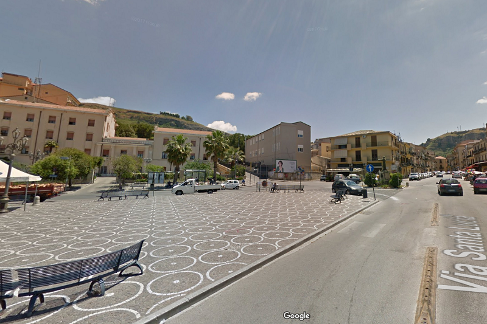

PIAZZA FALCONE E BORSELLINO, LA BELLISSIMA PIAZZA DI CORLEONE DEDICATA A FALCONE E BORSELLINO

PIAZZA FALCONE E BORSELLINO - CORLEONE SERA
INTRODUZIONE
La piazza dedicata a Giovanni Falcone e Paolo Borsellino a Corleone non è solo uno spazio urbano, ma rappresenta il cuore della "rinascita" della città. Per decenni associata esclusivamente alla cronaca nera e alla mafia, Corleone ha intrapreso un percorso di riscatto, e l'intitolazione di spazi pubblici ai martiri della giustizia ne è il segno tangibile. Punto di aggregazione: La piazza è un punto centrale per la vita sociale dei corleonesi, spesso sede di eventi culturali e commemorazioni legate alla legalità. Simbolismo: Collocare i nomi di Falcone e Borsellino nel cuore di quella che fu la roccaforte dei boss (come Riina e Provenzano) trasforma lo spazio in un presidio di Stato e civiltà. Dintorni: Non lontano dalla piazza e dalle vie principali, si trovano realtà come il C.I.D.M.A. (Centro Internazionale di Documentazione sulle Mafie e del Movimento Antimafia), che conserva i faldoni del Maxiprocesso.

PIAZZA FALCONE E BORSELLINO - CORLEONE DIURNO
STORIA
Il territorio di Corleone risulta frequentato sin dalla preistoria. Ricerche hanno individuato numerosi insediamenti distribuiti attorno a due poli principali: Pietralunga e La Vecchia. Tale nome fa riferimento ad una montagna che si erge per circa 1000 s.l.m. e dista circa due km dall'odierno centro abitato. Il sito di Pietralunga risulta occupato dal neolitico finale a tutta l'età del bronzo (presenza di un bicchiere campaniforme decorato a pointillé) mentre il sito della «Vecchia», il cui toponimo sottintende il termine «città» piuttosto che «montagna», come ha del resto intuito il Trasselli, fu abitata sin all'età medioevale (presenza di un imponente castello con torrioni aggettanti, recentemente individuato), anche se l'insediamento più consistente è riferibile a epoca arcaica e classica. «I pochi materiali riferibili ad età ellenistica rinvenuti nel sito hanno supportato l'ipotesi dell'identificazione dell'antico centro abitato posto sulla Vecchia con la Schera di Cicerone, Cluverio e Tolomeo, anche se tuttora troppo labili sono i resti archeologici su cui si basa tale teoria» (D'Angelo - Spatafora).